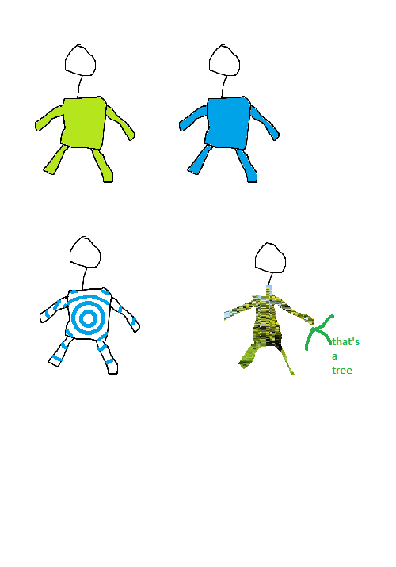

9/26/2020: Virtual clothes with Zoom
Zoom has a neat feature: Virtual Background. It lets you replace your background with any picture or video, either using AI or a green screen.
You can use it for your shirts as well, though!

First, open the Virtual Background tab, and select your background of choice.
Second, check "I have a green screen".
Okay, so here's the criteria:
- The shirt is a vibrant color, or not similar at all to your skin tone, your face, or your surroundings.
- The shirt is a solid color. No stripes, poka-dots, or gradients.
- The shirt has no wrinkles, and the light evenly lights up your shirt.
Now click on the color picker (the rectangle that showed up when you clicked that checkbox), and click on your shirt. Repeat until it looks good.
Yay! You're done! Some recommendations:
- Your camera might take a bit to warm up, so wait 5 seconds or so. You can warm it up while your video is stopped by opening the Virtual Background window, waiting 5 seconds, and then hitting start video.
- Try taking a picture of your room to have transparent clothes. Make sure it isn't mirrored, the camera stays at the same angle, and if you have a spin chair that you keep it in the same place.
- Try using fullscreen colors to have a red, orange, yellow, etc shirt. Also try patterns, and logos (use MS Paint to move them to the position of your shirt).
You know, you're probably not going to email me. But I'm looking for opinions, so email me at k i d s c o d i n g p l a c e @ g m a i l . c o m
Bye for now!